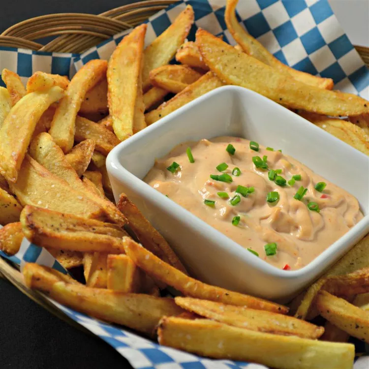

Our Belgian fries recipe ensures you get that authentic, crispy texture and delicious flavor every time. Simple ingredients, exceptional taste.
Ingredients
- 4 large russet potatoes
- Vegetable oil (for frying)
- Salt (to taste)
- Optional: mayonnaise, ketchup, or other dipping sauces
Steps
Prepare the Potatoes: Peel and cut the potatoes into evenly sized strips. Soak them in cold water for at least 30 minutes to remove excess starch, then drain and pat dry.
-
First Fry: Heat the oil in a deep fryer or heavy-bottomed pot to 325°F (165°C). Fry the potato strips in batches for 4-5 minutes until they are pale and soft. Remove and let them drain on paper towels.
-
Second Fry: Increase the oil temperature to 375°F (190°C). Fry the potatoes again in batches until they are golden and crispy, about 2-3 minutes. Drain on paper towels, season with salt, and serve with your favorite dipping sauces.